，则法截线的曲率半径的公式为
，则法截线的曲率半径的公式为7．曲面的理论
和空间曲线的理论一样，曲面理论也经历了一个漫长的开端。曲面理论是从曲面（主要是地球）上的测地线的研究开始的。在1697年的《博学者杂志》（Journal des Sçavans）中，约翰·伯努利提出了在一凸曲面上求两点间最短弧的问题(25)。他在1698年写信给莱布尼茨指出，测地线上任何一点处的密切平面（密切圆平面）在该点垂直于曲面。1698年詹姆斯·伯努利解决了柱面、锥面和旋转曲面上的测地线问题。尽管在1728年约翰·伯努利(26)用詹姆斯·伯努利的方法取得了某种成功并且求得了另外几类曲面的测地线，但詹姆斯·伯努利的方法是有局限性的方法。
1728年欧拉(27)给出了曲面上测地线的微分方程。欧拉用的是他在变分法中引进的方法（见第24章第2节），1732年赫尔曼(28)也求出了一些特殊曲面上的测地线。
克莱罗在他1733年和1739年(29)关于地球形状的著作中更充分地讨论了旋转曲面上的测地线。他在1733年的论文中证明了，对于任何旋转曲面来说，测地线和穿过这测地线的任何子午线（任何位置的母曲线）的夹角的正弦同交点到旋转轴的垂直距离成反比。在另一篇论文(30)中，他还证明了一个漂亮的定理，即在旋转曲面的任何一点M处，如果一平面通过M点且垂直于曲面和过M点的子午面，则这平面与曲面的交线在M点的曲率半径等于法线在M点和旋转轴之间的长度。克莱罗用的是分析的方法，但他和他的大多数前辈一样，他没有使用现在与变分法联系在一起的那些思想。
1760年欧拉在他的《关于曲面上曲线的研究》（Recherches sur la courbure des surfaces）(31)中建立了曲面的理论。这本著作是欧拉对微分几何最重要的贡献，而且是微分几何发展史中的一个里程碑。他把曲面表示为
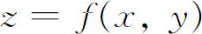
而且引进了现代的标准符号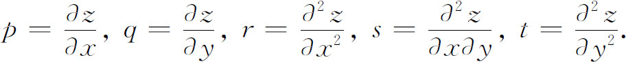
然后他说：“我从决定曲面的任何平面截线的曲率半径开始，然后把这种做法应用到曲面在任一给定点处的垂直截线上去，最后我在这些截线的相互倾斜程度方面比较它们的曲率半径，这种倾斜程度就使我们能够建立曲面曲率的真正概念。”
他首先对曲面的任何平面截线的曲率半径得到一个相当复杂的表达式。然后把这个结果用到法向截面（包含曲面的一条法线的平面）上去，将所得的结果特殊化。对于法截线，曲率半径的一般表达式稍稍简化了一点。其次他把垂直于x-y平面的法向截面定义为主法向截面。（“主”的这种用法今天是不用了。）设法向截面和主法向截面的夹角为，则法截线的曲率半径的公式为
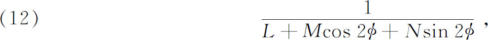
其中L，M和N是x和y的函数。为了得到过曲面上一点的所有法截线的最大和最小曲率［或者当（12）中分母的形式是不定时，为了得到两个最大曲率］，他令分母关于
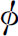
的导数等于零而且（在两种情形都）得到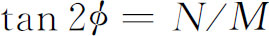
。存在两个相差90°的根，所以有两个互相垂直的法平面。我们把这两个平面上相应的曲率叫做主曲率κ1和κ2。从欧拉的结果推得，任何一个和主曲率所在法截面之一成α角的法截面，其上截线的曲率κ为
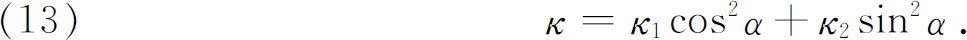
这个结果叫做欧拉定理。
蒙日的学生默尼耶（Jean-Baptiste-Marie-Charles Meusnier de La Place，1754—1793），在1776年以更加精细的方式得到同样的结果，他和拉瓦锡一起还在流体静力学和化学方面进行工作。然后默尼耶(32)处理了非法截线的曲率，欧拉对此曾经得到过一个非常复杂的表达式。默尼耶的结果，也叫默尼耶定理，说：曲面在P点的平面截线的曲率是通过在P点的同一切线的法截线的曲率除以原平面和P点的切平面之夹角的正弦。由此得到一个漂亮的结果，即如果考虑通过曲面上同一条切线MM′的平面族，这些平面截曲面所得各截线的曲率中心就都位于一个圆上，这个圆所在的平面垂直于MM′，它的直径就是法截线的曲率半径。然后默尼耶证明了这样一个定理：两个主曲率处处相等的曲面只有平面和球面。他的论文异常简单而且内容丰富，这有助于使18世纪所达到的许多结果直观化。
曲面论的一个主要方面是由于绘制地图的需要而发展起来的，这就是研究可展曲面，即可以将其平摊在平面上而不产生畸变的曲面。因为球面不能切开来这样摊平，于是问题就要求寻找一张形状与球面接近而又能不发生畸变的铺开的曲面。欧拉是研究这个问题的第一个人。这个工作包含在他的《论表面可以展平的立体》（De Solidis Quorum Superficiem in Planum Explicare Licet）(33)中。在18世纪，曲面被认为是固体的边界，这就是为什么欧拉要说立体的表面可以展平在一张平面上的原因。在这篇论文中他引进了曲面的参数表示，即
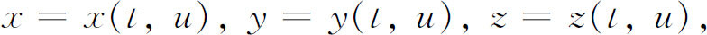
并且寻求：要使曲面可以展开在平面上，这些函数必须满足什么样的条件。他的方法是把t和u表示为平面上的直角坐标，然后形成一个小的直角三角形
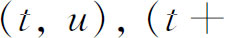
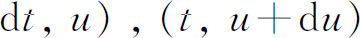
。因为曲面是可展的，所以这个三角形一定和曲面上的一个小三角形全等。如果用l，m和n表示x，y和z关于t的偏导数，用λ，μ，ν表示x，y和z关于u的偏导数，那么在曲面上相应的三角形是（x，y，z），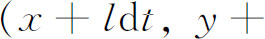
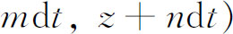
和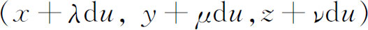
。从两个三角形的全等欧拉推导出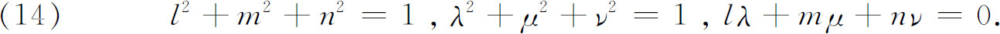
这些就是可展性的分析的必要充分条件。这个条件等价于要求曲面上的线元素与平面上的线元素相等。分析上，决定一个曲面是否可展的问题就是寻求曲面的一个参数表示
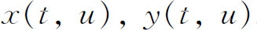
和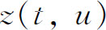
，使得它们的偏导数满足条件（14）。然后欧拉研究了空间曲线和可展曲面之间的关系并且证明了，任何空间曲线的切线族填满或构成一可展曲面。他试图证明每个可展曲面都是直纹面，就是说，由直线移动而生成的曲面，并且逆定理也对，但是没有成功。事实上，逆定理是不对的。
蒙日独立地研讨了可展曲面的课题。在蒙日那里几何和分析是相辅相成的。他把同一个问题的几何方面和分析方面统括起来并且说明既从几何上又从分析上进行思考的好处。在18世纪，尽管有欧拉和克莱罗的解析几何和微分几何，但是因为分析支配着这一世纪，所以蒙日的双重观点的效果是把几何置于至少和分析同等的基础上，从而鼓舞了纯粹几何的复活。蒙日是继德萨格之后在综合几何方面第一个真正的革新者。
蒙日在画法几何（这原先是为建筑学服务的）、解析几何、微分几何、常微分方程和偏微分方程方面范围广阔的工作赢得了拉格朗日的钦佩和羡慕。拉格朗日在听了蒙日的一次讲演后对他说：“我亲爱的同事，你刚才提出了许多第一流的成果，要是我能够做出来就好了。”蒙日对物理学、化学、冶金学（锻造问题）和机械学都做了许多贡献。在化学方面他和拉瓦锡一起工作。蒙日看到了工业发展对科学的需求，而且提倡把工业化作为改善生活的一个途径。也许是因为他懂得出身卑贱的苦难，所以他热衷于活跃的社会事务。正因为这个原因，他支持法国革命并在革命以后的政府中担任海军部长和公众健康委员会的委员。他设计过武器装备，还用技术思想来指导政府职员。由于他对拿破仑的钦佩，使他成为拿破仑反革命措施的一个追随者。
蒙日帮助组织了多科工艺学校，在那里作为一个教授建立了一个几何学派。他是一个伟大的教师而且是一支鼓舞19世纪数学活动的力量。他的生气勃勃内容丰富的讲演激起了学生们的积极性，在他们中间至少有12人是19世纪早期最著名的人物。
蒙日在三维微分几何方面开创的结果远远超过欧拉。他1771年的论文《关于曲率半径以及重曲率曲线的各种拐点的论文》（Mémoire sur les développées，les rayons de courbure，et les différents genres d'inflexions des courbes à double courbure）发表得很晚(34)，之后是他的《关于把分析应用于几何的活页论文》（Feuilles d'analyse appliquée à la géométrie，1795，第二版1801）。《活页论文》中微分几何的分量和解析几何及偏微分方程的分量一样多。这篇论文在讲演笔记的基础上，把一些老的结果加以系统化并作了扩充，提出了有某种重要性的一些新结果，并把曲线和曲面的各种性质翻译成偏微分方程的语言。在寻求分析思想和几何思想的对应关系时，蒙日认识到一族具有共同几何性质或用同一种生成方法定义的曲面应满足一个偏微分方程（见第22章第6节）。
蒙日的第一个重要工作，即关于双重曲率曲线的可展曲面的论文，研究了空间曲线及与之相联系的曲面。那时蒙日并不知道欧拉关于可展曲面的工作。他把空间曲线或者作为两曲面的交线，或者用它们在两个互相垂直的平面上的投影来处理，即由
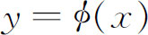
和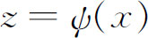
给出。在任一寻常点处，有无穷多条法线（垂直于切线）位于同一平面——法平面上。在这个法平面上有一条线，他称之为（极）轴。就是该法平面和相邻法平面交线的极限位置。当沿着曲线移动时，诸法平面的包络是一可展曲面，叫做配极可展曲面。诸法平面的轴也扫过这曲面。从P点到P点处法平面的轴的垂线就是主法线，而垂足Q就是曲率中心。为了求得配极可展曲面的方程，他求出了法平面的方程，并从这一方程及其对x的偏导数之间消去x。他还给出了求任何单参数平面族的包络的一个法则，这个法则我们现在还在使用。这个法则同样适用于单参数曲面族，用我们的记号这个法则就是：取
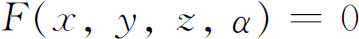
为单参数平面族。为了求得这族平面和“一个无限靠近的曲面”相交在什么地方，他求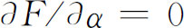
。这两曲面的交线叫特征线，在F＝0和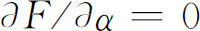
间消去α就求得包络的方程。他应用这种方法去研究其他的可展曲面，他把每一张这样的可展曲面都看成是一个单参数平面族的包络。蒙日还研究了可展曲面的脊线（arête de rebroussement），这是由生成曲面的一组直线形成的。任意两条相邻直线的相交是一个点，而这种点的轨迹就是脊线Γ。于是与Γ相切的直线都是母线或者说Γ是生成直线族的包络。脊线把可展曲面分成两叶，就像平面曲线上的尖点把曲线分成两部分一样。蒙日得到了脊线的方程。在空间曲线的配极可展曲面的情形，脊线就是原空间曲线的曲率中心的轨迹。
1775年蒙日向科学院提交了另一篇关于曲面，特别是关于在影子和半阴影（shadows and penumbras）理论中碰到的可展曲面的论文(35)。用了可展曲面能摊平在平面上而不发生畸变这一定义，他直观地论述了可展曲面是直纹面（但是反之不真），在这直纹面上两条相邻直线是共点的或是平行的，而且论述了任何可展曲面等价于由空间曲线的切线生成的曲面。正是在1775年的这篇文章中，他给出了可展曲面的一个一般表示。它们的方程总有这样的形式：
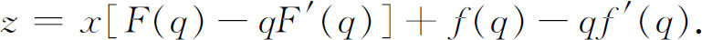
其中
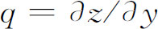
，而且除了垂直于x-y平面的柱面外，这种曲面满足的偏微分方程总是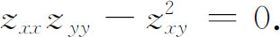
然后蒙日研究了直纹面并且给出了直纹面的一个一般表示。他还给出了直纹面满足的三阶偏微分方程，并且对它们进行了积分。然后他证明了可展曲面是一种特殊的直纹面。
在1776年《关于开挖和回填的理论的论文》（Mémoire sur la théorie des déblais et des remblais）(36)中，蒙日研究了在城堡的建筑中出现的问题，这个问题涉及把土或其他材料从一个地方输送到另一个地方，并且要寻找一种最有效的办法来做这件事，即输送的材料乘上输送的距离应该达到极小。对于曲面的微分几何而言，这个工作只有一部分是重要的；事实上，这个实际问题的结果并不太现实。而正如蒙日所说，他发表这篇论文是为了发表论文中的几何结果。文中他从处理依赖于两个参数的一族直线或线汇这个课题着手。然后遵循欧拉和默尼耶的工作，他考虑了曲面S的法线族，它们也构成一个线汇。特别考虑了沿一条曲率线的法线，曲率线是曲面上这样一条曲线，在该曲线的每一点上有一个主曲率。在曲率线的这些点上的曲面法线构成一个可展曲面，叫做法可展曲面。类似地，沿垂直于第一条曲率线的曲面法线也构成一个可展曲面。因为在曲面上有两族曲率线，所以有两族可展曲面，一族中的可展曲面与另一族中的可展曲面相互正交。事实上，任意两个这样的可展曲面的交线上的点都在一曲面法线上。在每一条法线上有两点，它们到曲面的距离等于两个主曲率的大小。每一个由主曲率之一确定的点集，在垂直于曲率线的法线上的那个点集，位于由那个法线族构成的可展曲面的脊线上，所以法线和那条脊线相切。一族可展曲面的全部脊线组成一曲面，叫做中心曲面。于是有两张这样的中心曲面（图23.13）。每族可展曲面的包络叫做焦曲面。
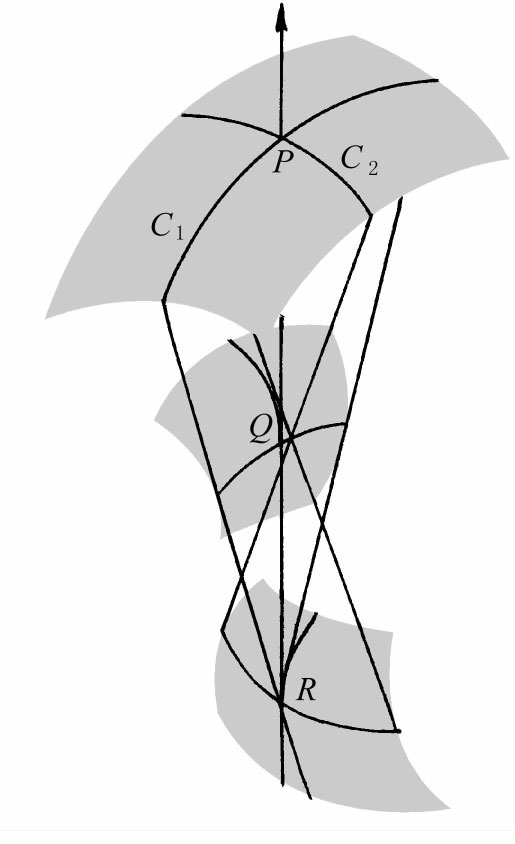
图23.13
蒙日关于曲面族，满足非线性和线性一阶、二阶甚至三阶偏微分方程的曲面族的研究工作的进一步细节对于偏微分方程课题来说意义更大。
蒙日往往喜欢通过对许多具体的曲线和曲面的充分论述来阐明他的思想。他的思想的推广和运用是由19世纪的数学家们去实现的。蒙日总是面向实际，他以一个怎样能把他的理论应用到建筑上去的设想，特别是用于大会议厅的建造的设想来结束他的《活页论文》。
对曲面论的一些别的方面的贡献是由蒙日的一个学生迪潘（Charles Dupin，1784—1873）做出的。迪潘作为一个造船工程师毕业于多科工艺学校，他和蒙日一样，经常把几何的应用记在心里。他的教科书《几何学的发展》（Développements de géométrie，1813）加了一个副标题“在船舰的稳定性、开挖和回填、防御工事、光学等方面的应用”，在其他著作中值得注意的是他的《几何学和力学的应用》（Applications de géométrie et de mécanique，1822），他做出了许多在几何和力学上的应用。我们将要叙述的头几个结果是在1813年的书中。
迪潘的贡献之一叫做迪潘指标线，它总结并澄清了欧拉和默尼耶先前的结果。给定了曲面在一点M的切平面，他在切平面的每一个方向上从M开始画出一线段，它的长等于曲面在该方向的法截线的曲率半径的平方根。这些线段的端点的轨迹是一条圆锥曲线——指标线，它给出曲面在M周围的形式的一个一阶近似（因为它几乎相似于这曲面被M附近的一个平行于M点处切平面的平面所截出的截线）。曲面在一点的曲率线，即曲面上通过M点的具有极（最大或最小）曲率的曲线，是在M点以指标线的轴线作为切线的曲线。
在三维直角坐标系中，坐标面是三族平面x＝const．，y＝const．和z＝const．。假定有三族曲面，每一族都由x，y和z的一个方程给出。如果一族中的每一曲面都和另两族的曲面正交，那么这三族曲面就叫做正交的。迪潘在这方面的最突出的结果，写在他的《几何学的发展》中，就是如下的定理：三族正交曲面相互交截于每个曲面的曲率线（有最大或最小法曲率的曲线）。
迪潘还推广蒙日关于线汇的结果。如果线汇——双参数族——与一族曲面正交，就像在光学中，线是光线而曲面是波前，那么这线汇就叫做正交的。法国物理学家马吕斯（Etienne-Louis Malus，1775—1812）显然利用了蒙日的结果——虽然他没有引证这些结果——证明了(37)从一点（一个同心集）发出的法向线汇在曲面上反射或折射后（按照折射定律）仍然是一个法向线汇。1816年(38)迪潘证明了这一定理对于任何法向线汇经任意多次反射后仍然成立。后来凯特尔（Lambert A．J．Quetelet，1796—1874）证明了法向线汇经任意多次折射后仍为法向线汇(39)。线汇和线丛，由马吕斯引进的依赖于三个参数的曲面族，是19世纪许多数学家从事研究的课题。